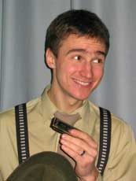
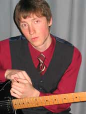
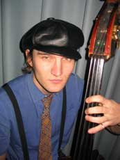
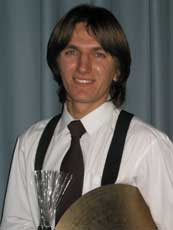
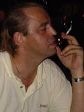

Svet. Born on April 23, 1980. Began musical studies at 4. First musical instrument - accordion. At the age of 6, became an art college student (piano). Started to play the blues in 2001 under the impression of John Lee Hooker records. Played the acoustic guitar. First harmonica was a gift from Al. Favorite harmonica players - Junior Wells and Howlin' Wolf. Takes inspiration from the music of blues pianists Pinetop Perkins and Otis Spann."I have always hated the classical school where they won't let you play not by the notes… I had this small radio, and from time to time I heard on this radio sounds that really touched me. Now I know it was the blues…"

Al. Took up guitar studies at 16 under the influence of Eric Clapton, Jimi Hendrix and Led Zeppelin. At 19 took part in a number of projects as the electric guitar player. Became seriously interested in the blues after a trip to the US in 2000. In 2002, began learning various slide techniques based on open tunings. Favorite musicians are Buddy Guy, Muddy Waters and John Lee Hooker."I like playing for people and seeing how the audience reacts to what we are doing on stage. It is ingratiating when people come to understand the blues after visiting our concerts. Besides, I like traveling, and will be happy if the blues gives me an opportunity to do that."

Artiom Gavriushin. Born on July 14, 1978 in Minsk. Received basic musical education at a secondary school with special focus on music, playing the flute and the xylophone. Then music studies were abandoned until, at the age of 14 or 15, I started learning to play the acoustic guitar - and soon noticed that I liked plucking only the thicker strings. That was my first step towards becoming a bass player. At 18 I played the bass guitar for a number of local bands. My first double bass experience came much later (when I was 24), even though I had been dreaming about it since the very beginning of my musical career. And the double bass opened the doors for the blues."The blues has given me more than I bargained for. I wanted to learn how to play the double bass, and discovered a whole world waiting for me. There are many roads in this world, and I am sure that whatever road I choose, it will be the right one, and I will never be sorry for taking it."

Sergey Kotlyarov. Born on May 22, 1979, in a family of workers. At 7 began to attend general school where, at a singing lesson during his 7th year, first learnt what the blues is all about. Joined his first musical band at 15. This was the beginning of a serious infatuation with music in general, and with the blues in particular."I like all kinds of music, only it has to be stylish and high-quality… I know that the blues was invented by "black" guys, but I am positive that some "white" guys can be "black" …"

Big Val. Born on December 18, 1963. Professional translator. Self-taught guitar player. Played the Beatles, Time Machine, Resurrection. "Caught" the blues in 2000 when visiting a friend in New Orleans. First blues composition - Malted Milk (Robert Johnson) as arranged by Eric Clapton. Favorite blues style - country blues of the 1920-es and 1930-es. Favorite bluesmen - Robert Johnson, Rev. Gary Davis, Big Bill Broonzy, Blind Boy Fuller, Blind Blake, Mississippi John Hurt."I think that some people are born with blues in their hearts, and whatever they do in life, sooner or later the blues will call them…"